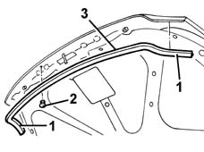

7025A62 bonnet lid anti-wind noise seal - r+r
- Path
- Procedures > 70 FITTINGS > 7025 COMPARTMENT LIDS > 7025A LOCATION OF BONNET WIND NOISE > 7025A62 bonnet lid anti-wind noise seal - r+r
- Kind
- repair procedure (removal / refitting; the operation number is the code)
- Applies to
- all engines; all production periods
- Interactive page
- https://sloeber94.github.io/elrnDB-fMltpl/en/#/2892137
Applies to: all engines; all production periods
 Removing
Removing
 Refitting
RefittingOpen the bonnet lid.
1. Prise the wind seal from round the edges of the cover, at the sides.
2. Undo the retaining studs.
3. Recover the wind seal.

Applies to: all engines; all production periods
Refitting
RemovingCheck that the wind seal is undamaged.
Fit the seal and secure with the retaining studs.
Fit the seal in place around the cover.